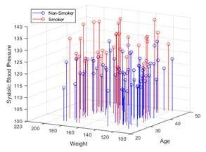
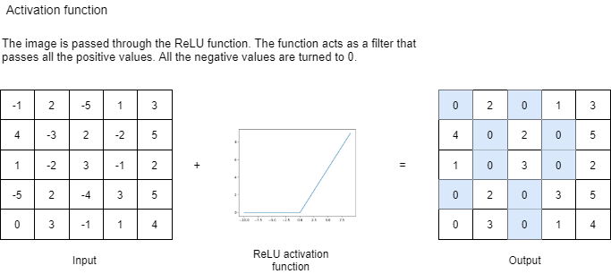

Can you tell which layer your image belongs to ? The diagram shows the outputs from the initial layers, middle layers, and the last layers. The early layers try to capture the edges and backgrounds, the middle layers capture the prominent features and the deeper layers try to learn the overall structure in the image. As you can see the deeper layers are not visually very coherent but the neural networks learns a lot from these images.
Uploaded image
Processed image
Object Prediction
Convolutional Neural Network for Object Detection
Now that we have seen what the model detects lets dive into how the neural network detects these objects. A convolutional neural network performs different mathematical operations repeatedly to learn information for an image. Two major operations performed are convolutions and applying an activation function. We discuss each of the operations before the user gets the opportunity to view how the output of each layer looks in the network.
Convolution
Convolutions are used to extract features from the image. Generally, the earlier layers try to
capture the edges and backgrounds, the middle layers capture the prominent features and the deeper
layers try to learn the overall structure in the image. This is the reason that the output of the
deeper layers are not very coherent visually. You'll learn more about this while seeing the ouput of
multiple layers of the network.
The image shown has size 5X5, which is convolved with a 3X3 Kernel to generate the feature maps. The
convolution operation is performed by sliding the kernel across the image. In the animation shown
below, blue area represents the receptive field that are the pixels that undergo convolution. At
every location, we perform element-wise matrix multiplication and rum the result to get the
corresponding value in the feature map.
The below image shows how the feature map is generated at each pixel using convolution.

Activation
The data represented in the real world is mainly non-linear. Consider the graph given in the below figure representing the blood pressures of individuals who smoke and the ones who don’t.
A linear graph will only be able to give a line 3D space but will not be able to learn the patter on what makes the person a smoker or a non-smoker. This is because the pattern that defines this classification is nonlinear. To learn on this data we need to induce non-linearity into the system. Since convolution is a linear function, we need to pass the feature maps generated through a nonlinear function. These functions are called activation functions. In this project we are using a ReLU activation function and below is the description how ReLU works on an image.
Further, when you click on the “Convolutional Neural Network for uploaded image” button, you will notice that few neurons are grey. This is because these are dead neurons. Dead neurons generally occur when the network is very deep i.e. has a lot of layers. However, few dead neurons do not affect the learning of the complete neural network.